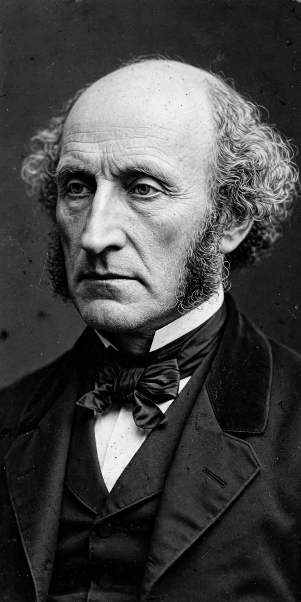

Harm principle
From Wikipedia, the free encyclopedia

The harm principle holds that the actions of individuals should be limited only to prevent harm to other individuals. John Stuart Mill articulated this principle in On Liberty (1859), where he argued that the state or society should only interfere with an individual's freedom of action when that action would harm another person; the individual's own good, whether physical or moral, is not sufficient justification for interference.
"The only purpose for which power can be rightfully exercised over any member of a civilized community, against his will, is to prevent harm to others. His own good, either physical or moral, is not a sufficient warrant."
Statement and scope
Mill's principle distinguishes between self-regarding conduct, which affects only the agent (or consenting adults), and other-regarding conduct, which injuriously affects others and may therefore be regulated. The principle is a cornerstone of liberal political philosophy and underpins opposition to legal paternalism (restricting liberty for a person's own good) and legal moralism (restricting liberty because conduct is thought immoral, even when harmless).
Mill recognised exceptions and qualifications. The principle applies only to adults of sound mind in "civilized" communities; children and those unable to care for themselves may be protected against themselves. He also accepted that some acts, though harmless in themselves, may be restricted when performed publicly if they offend decency, and that individuals have positive duties — for example, to give evidence in court or to contribute to the common defence — the omission of which may be punished.
Definition of harm
The practical reach of the principle depends on how "harm" is understood. Philosophers such as Joel Feinberg have distinguished harm (a setback to interests, typically involving a rights violation) from mere offence (unpleasant mental states such as disgust or annoyance), proposing a supplementary "offence principle" for some public conduct. Broader readings of harm — including psychological distress, economic competition, or diffuse social costs — threaten to expand the principle until it justifies extensive regulation, while narrower readings may fail to capture indirect and cumulative harms, such as pollution, where each individual act is trivial but the aggregate is serious.
Influence
The harm principle has been hugely influential in political and legal debate: it is invoked in arguments for the decriminalisation of victimless offences, in defences of freedom of speech, and in debates over drug policy, gambling, and sexual morality. The Wolfenden Report (1957) in Britain, which recommended decriminalising private homosexual acts between adults, echoed Mill in holding that there is a realm of private morality that is "not the law's business". Critics respond that the boundary between self-regarding and other-regarding acts is porous — behaviour from drug use to non-wearing of seatbelts imposes costs on families and public services — and that the principle by itself cannot settle contested policy questions.